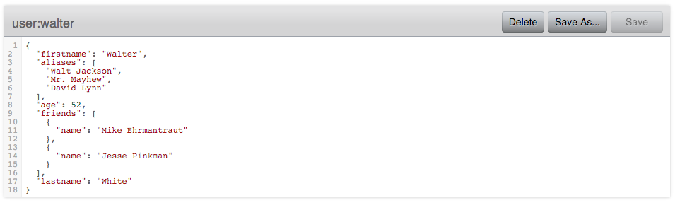
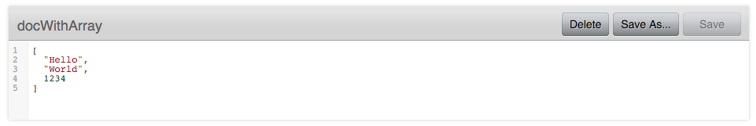
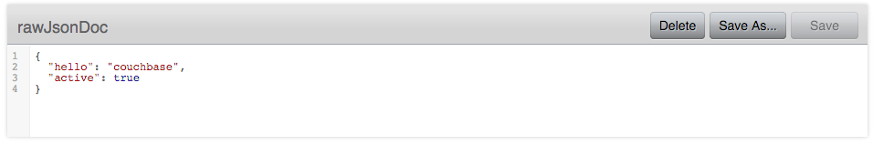

Document basics
Describes the properties and types of Document objects and how to use them.
The Document
The Document class encapsulates the consolidated representation of all attributes that relate to a document stored on a Couchbase Server cluster. It includes the document's identifier and related metadata. A Document object contains the following properties:
| Name | Description |
|---|---|
| id | The (per bucket) unique identifier of the document. |
| content | The actual content of the document. |
| cas | The CAS (Compare And Swap) value of the document. |
| expiry | The expiration time of the document. |
There are a few different implementations of a Document, the most prominent one is the JsonDocument.
Because Couchbase Server is able to not only store JSON but in fact anything, many document types exist to satisfy the general needs of an application. You can also write your own Document implementations, but this is not covered in this introduction.
The following Document types are supported out of the box:
Documents with JSON content:
| Document Name | Description | Compatible: 2.x SDKs | Compatible: 1.x Java SDK |
|---|---|---|---|
| JsonDocument | The default, which has a JsonObject at the top level content. | Yes | Yes |
| JsonArrayDocument | Similar to JsonDocument, but has a JsonArray at the top level content. | Yes | Yes |
| JsonBooleanDocument | Stores JSON-compatible Boolean values. | Yes | Partially |
| JsonLongDocument | Stores JSON compatible long (number) values. | Yes | Partially |
| JsonDoubleDocument | Stores JSON compatible double (number) values. | Yes | Partially |
| JsonStringDocument | Stores JSON compatible String values. Input is automatically wrapped with "...". | Yes | Partially |
| RawJsonDocument | Stores any JSON value and should be used if custom JSON serializers such as Jackson or GSON are already in use. | Yes | Yes |
Documents with other content:
| Document Name | Description | Compatible: 2.x SDKs | Compatible: 1.x Java SDK |
|---|---|---|---|
| BinaryDocument | Can be used to store arbitrary binary data. | Yes | Yes |
| SerializableDocument | Stores objects that implement Serializable through default Java object serialization. | No | Yes |
| LegacyDocument | Uses the Transcoder from the 1.x SDKs and can be used for full cross-compatibility between the old and new versions. | No | Yes |
| StringDocument | Can be used to store arbitrary strings. They will not be quoted, but stored as-is and flagged as "String". | Yes | Yes |
CAS and Expiry
Every Document also contains the expiry and cas properties. They are considered meta information and are optional. An expiration time of 0 means that no expiration is set at all, and a CAS value 0 means it won't be used.
You can set the expiry to control when the document should be deleted:
// Expire in 10 seconds.
JsonDocument.create("id", 10, content);// Expire in 1 day.
JsonDocument.create("id", TimeUnit.DAYS.toSeconds(1), content);The expiration time starts when the document has been successfully stored on the server, not when the document was created on the application server. Any expiration time larger than 30 days in seconds is considered absolute (as in a Unix time stamp), anything smaller is considered relative in seconds.
The CAS value can either be set by you directly or is populated by the SDK when the Document is loaded from the server (which is the recommended way to use it).
For detailed information about how to utilize CAS for optimistic concurrency control, see Updating documents.
JsonDocument
Couchbase Server uses the JSON format as a first-class citizen. It is used for querying (via both views and N1QL) and represents the main storage format that should be used.
The JsonDocument class has factory methods named create() that you use to create documents. If you do not want to pass in an expiration time or CAS value (just the ID and content) you do it like this:
JsonDocument doc = JsonDocument.create("id", content);The content needs to be of type JsonObject, which ships with the Java SDK. It works very much like a Map object, but makes sure only data types understood by JSON are used.
An empty JSON document can be created like this:
JsonObject content = JsonObject.empty();After it is created, you can use the various put() methods to insert data:
JsonArray friends = JsonArray.empty()
.add(JsonObject.empty().put("name", "Mike Ehrmantraut"))
.add(JsonObject.empty().put("name", "Jesse Pinkman"));
JsonObject content = JsonObject.empty()
.put("firstname", "Walter")
.put("lastname", "White")
.put("age", 52)
.put("aliases", JsonArray.from("Walt Jackson", "Mr. Mayhew", "David Lynn"))
.put("friends", friends);This generates a JSON document like this (unordered, because the actual content is stored in a Map):
{
"firstname":"Walter",
"aliases":[
"Walt Jackson",
"Mr. Mayhew",
"David Lynn"
],
"age":52,
"friends":[
{
"name":"Mike Ehrmantraut"
},
{
"name":"Jesse Pinkman"
}
],
"lastname":"White"
}
In addition, the JsonObject and JsonArray classes provide convenience methods to generate and modify them.
The JsonDocument can then be passed into the various operations on the Bucket:
JsonDocument walter = JsonDocument.create("user:walter", content);
JsonDocument inserted = bucket.insert(walter);If you want to read values out of the JsonDocument, you can use either the typed or untyped getter methods.
int age = content.getInt("age");
String name = content.getString("firstname") + content.getString("lastname");JsonArrayDocument
The JsonArrayDocument class works exactly like the JsonDocument class, with the main difference that you can have a JSON array at the top level content (instead of an object).
So if you create a JsonArrayDocument like this:
JsonArray content = JsonArray.from("Hello", "World", 1234);
bucket.upsert(JsonArrayDocument.create("docWithArray", content));It will look like this on the server:

If you want to read the JsonArrayDocument back, you need to tell the SDK you explicitly want to deviate from the default. This needs to be done for every document type other than JsonDocument:
bucket.get("docWithArray", JsonArrayDocument.class);RawJsonDocument
The JsonObject and JsonArray types have been added for developer convenience. In a lot of places though, custom JSON handling is already in place through libraries like Jackson or Google GSON.
Of course we want to provide the best of both worlds, and this is where the RawJsonDocument comes into play. You can store and read the already stringified JSON, but the SDK properly marks it as JSON so it is cross-compatible with all other documents.
Here is how you can read and write raw JSON data. For clarity, a plain string is used but it is up to you to wire this up with Jackson or a similar JSON processor:
// write the raw data
String content = "{\"hello\": \"couchbase\", \"active\": true}";
bucket.upsert(RawJsonDocument.create("rawJsonDoc", content));
// read the raw data
// prints RawJsonDocument{id='rawJsonDoc', cas=..., expiry=0, content={"hello": "couchbase", "active": true}}
System.out.println(bucket.get("rawJsonDoc", RawJsonDocument.class));
// read it parsed
// prints true
System.out.println(bucket.get("rawJsonDoc").content().getBoolean("active"));
JSON value documents
The JSON specification also allows you to store different values as content and it also specifies how these values need to be encoded. Because the type system of Java is not as rich as it could be, different document types are provided to represent different values that can be stored. Because the encoding is clearly defined, these JSON values are also compatible with other 2.0 SDKs.
A word on compatibility with the 1.X Java SDK: in a best-effort way the SDK tries to read properly flagged data from the old SDKs, but it stores it under the new format, which is not readable by the old SDKs anymore. So if you care about back-and-forth compatibility only read those values from the new SDK or use the LegacyDocument right away. Another option is to use strings only on the old SDK, then working with it back and forth should be safe.
Backward compatibility for JSON value documents works only if the actual content is not compressed.
The following documents exist, which all work similarly except the content type that can be stored:
- JsonBooleanDocument
- JsonLongDocument
- JsonDoubleDocument
- JsonStringDocument
They are all encoded and decoded based on their JSON specification.
BinaryDocument
The BinaryDocument can be used to store and read arbitrary bytes. It is the only default codec that directly exposes the underlying low-level Netty ByteBuf objects.
Because binary data is arbitrary anyway, it is backward compatible with the old SDK in terms of flags, so it can be read and written back and forth. Make sure it is not compressed in the old SDK and that the same encoding and decoding process is used on the application side to avoid data corruption.
Here is some demo code that shows how to write and read raw data. The example writes binary data, reads it back, and then frees the pooled resources:
// Create buffer out of a string
ByteBuf toWrite = Unpooled.copiedBuffer("Hello World", CharsetUtil.UTF_8);
// Write it
bucket.upsert(BinaryDocument.create("binaryDoc", toWrite));
// Read it back
BinaryDocument read = bucket.get("binaryDoc", BinaryDocument.class);
// Print it
System.out.println(read.content().toString(CharsetUtil.UTF_8));
// Free the resources
ReferenceCountUtil.release(read.content());SerializableDocument
Any object that implements Serializable can be safely encoded and decoded using the built-in Java serialization mechanism. While it is very convenient, it can be slow in cases where the POJOs are very complex and deeply nested. It is backward compatible with the old SDK unless the data has been compressed previously.
Here is an example that serializes a POJO, deserializes it later, and then prints one of its properties:
import java.io.Serializable;
public class User implements Serializable {
private final String username;
public User(String username) {
this.username = username;
}
public String getUsername() {
return username;
}
}// Create the User and store it
bucket.upsert(SerializableDocument.create("user::michael", new User("Michael")));
// Read it back
SerializableDocument found = bucket.get("user::michael", SerializableDocument.class);
// Print a property to verify
System.out.println(((User) found.content()).getUsername());LegacyDocument
The LegacyDocument is intended to be 1:1 compatible (including compression) with the 1.x Java SDK. For better compatibility with the other 2.0 SDKs we recommend to move to JSON type documents (and other compatible ones), but the LegacyDocument is very helpful during data migration and side-by-side usage.
Because the old and new SDKs don't share artifacts or namespaces, they can be used at the same time. If you're using Maven, you can add both a 1.x SDK and a 2.x SDK as dependencies in the pom.xml file. For example:
<dependencies>
<dependency>
<groupId>com.couchbase.client</groupId>
<artifactId>java-client</artifactId>
<version>2.0.3</version>
</dependency>
<dependency>
<groupId>com.couchbase.client</groupId>
<artifactId>couchbase-client</artifactId>
<version>1.4.5</version>
</dependency>
</dependencies>Here is a snippet that writes a value using the old SDK and reads it out with the new one:
// Open bucket on the new SDK
Cluster cluster = CouchbaseCluster.create();
Bucket bucket = cluster.openBucket();
// Open bucket on the old SDK
CouchbaseClient client = new CouchbaseClient(
Arrays.asList(URI.create("http://127.0.0.1:8091/pools")),
"default",
""
);
// Create document on old SDK
client.set("fromOld", "Hello from Old!").get();
// Create document on new SDK
bucket.upsert(LegacyDocument.create("fromNew", "Hello from New!"));
// Read old from new
System.out.println(bucket.get("fromOld", LegacyDocument.class));
// Read new from old
System.out.println(client.get("fromNew"));
// Shutdown old client
client.shutdown();
// Shutdown new client
cluster.disconnect();This prints:
LegacyDocument{id='fromOld', cas=1097880624822, expiry=0, content=Hello from Old!}
Hello from New!StringDocument
This document type provides an SDK 2.0 cross-compatible way to exchange strings. It should not be mistaken with the JsonStringDocument which automatically quotes it and also flags it as JSON. It is also backward compatible unless compression was used previously.
If a String is stored through it, it is explicitly flagged as a non-JSON string. The usage is straightforward:
// Create the document
bucket.upsert(StringDocument.create("stringDoc", "Hello World"));
// Prints:
// StringDocument{id='stringDoc', cas=1424054670330, expiry=0, content=Hello World}
System.out.println(bucket.get("stringDoc", StringDocument.class));You can use the cbc command line tool to compare the flags and actual content compared to the JsonStringDocument:
bucket.upsert(StringDocument.create("stringDoc", "Hello World"));└──╼ cbc cat stringDoc
stringDoc CAS=0x55668b55f010000, Flags=0x4000000. Size=11
Hello Worldbucket.upsert(JsonStringDocument.create("jsonStringDoc", "Hello World"));└──╼ cbc cat jsonStringDoc
jsonStringDoc CAS=0x84d77eb55f010000, Flags=0x2000000. Size=13
"Hello World"You can see that the JSON string got automatically quoted and also has different flags applied to it.